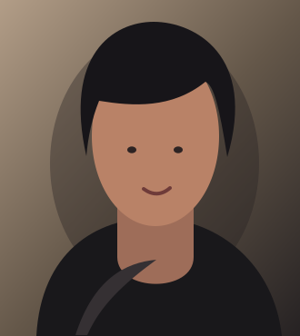

PERFORMER / STORYTELLER / A FICTIONAL EXPLORATION
AdrianVale.
A quiet intensity. An instinct for the unexpected. An imagined portfolio for a new voice in film and theater.
EXPLORE SELECTED WORKSTUDY / 01

AN ORIGINAL VECTOR PORTRAIT / NOT A CLIENT HEADSHOT“A story begins long before the first word.”
CREATIVE COPY WRITTEN FOR THIS CONCEPT / NOT A REVIEWSelected moments.
ILLUSTRATIVE CREDITS / 2024–2026
Showing all four sample credits